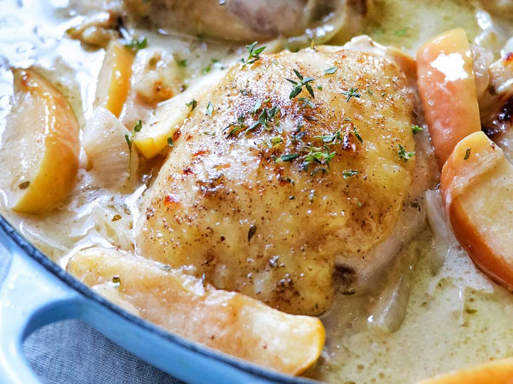

Baked Chicken Thighs with Apples and Onions

Description
This warm and hearty chicken dinner with apples and onions is perfect for the fall.
Onions are simmered in apple cider and chicken stock before being baked
with chicken thighs, apples, and cream.
Ingredients
- 200 grams of chicken thighs
- salt and pepper
- 2 tablespoons of vegetable oil
- 1 onion
- 1/2 cup of chicken stock
- 1 cup of apple cider
- 2 medium apples
- 1/4 cup of heavy cream
- 1 tablespoon cornstarch
- 1/2 tablespoon of fresh thyme leaves
Recipe Instructions
- Preheat the oven to 175 degrees C
- Season the chicken with salt and pepper
- Slice the onions into strips
- Heat oil in a skillet or pan and fry the chicken until brown and remove them
- Add sliced onions to the pan and sautee them until brown. Pour in apple cider and chicken stock to clean the pan.
- Add in thyme leaves and salt
- Add the chicken back into the pan and add sliced apples in the pan and cover with aluminium foil
- Bake chicken in the oven for 15 minutes
- Whisk heavy cream and cornstarch in a small bowl
- Stir the mixture into the sauce in the pan
- Bake the chicken again for about 15 more minutes at 74 degrees C
Back to top
Back to main page